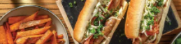

Loaded Beef and Bacon Sausage Sizzle

Ingredients
Method
-
Preheat the oven to 240°C/220°C fan-forced. Preheat the BBQ to a high heat. Cut the sweet potato into fries. Place
on a lined oven tray. Drizzle with olive oil, sprinkle over the Aussie spice blend and toss to coat. Bake until
tender, 20-25 minutes. TIP: If your oven tray is crowded, divide between two trays.
-
While the fries are baking, thinly slice the apple (see ingredients) and celery. Thinly slice the chives. Slice
the hot dog buns in half, lengthways, 3/4 of the way through. Grate the smoked Cheddar cheese. In a medium bowl,
combine the mustard cider dressing and a pinch of salt and pepper.
-
When the BBQ is hot, grill the caramelised onion & parsley beef sausages, turning occasionally, until slightly
charred and cook through, 10-15 minutes. Transfer to a plate. No BBQ? In a large frying pan, heat a drizzle of
olive oil over a high heat. Cook the sausages, turning occasionally, until browned all over, 5-6 minutes. Transfer
to a lined oven tray and bake until cooked through, 10-15 minutes.
-
When the sausages have 5 minutes remaining, grill the bacon, turning, until golden, 4-5 minutes. Transfer to a
plate. No BBQ? Return the frying pan to a medium-high heat. Cook the bacon, turning, until golden, 4-5 mins.
-
While the bacon is cooking, place the hot dog buns, cut-side down, on the grill, then grill until lightly golden,
2-3 minutes. Meanwhile, add the spinach & rocket mix, tomato and apple to the bowl with dressing. Toss to coat.
Transfer the grilled buns to the plate with the bacon. No BBQ? Place the hot dog buns on a wire rack in the oven
until heated through, 3 minutes.
-
Spread the hot dog buns with 1/2 the garlic aioli, then fill with the beef sausages (two per bun), bacon, smoked
Cheddar and chives. Serve with the spinach-rocket salad, sweet potato fries and remaining garlic aioli.